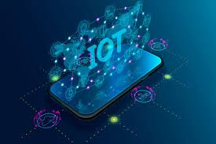

<html>
    <head>
        <titel>Latest Emerging Technologies</titel>
        <link rel="stylesheet" type="text/css" href="style.css">
    
</html>
<body>
    <h1 id="h1">LATEST EMERGING TECHNOLOGIES</h1>
    <br><br>
    <h2 id="h2">1). 3-D Printing</h2>
    <br>
    
    <br>
    <p id="p1">3D printing or additive manufacturing is a process of making three-dimensional solid objects from a digital file built in a CAD model.
        What it means for application development: 3-D printing has been on the scene for a while, but its applications are still in the infancy stage.
         Retail businesses are starting to look into the possibility of using 3-D printers to make tailored attire for consumers.
          One company is developing an app that scans a customer’s foot, and prints out the perfect fitting shoe using 3-D printing technology.
           To fully leverage this technology, user-friendly interfaces and applications will provide many businesses with a leading edge competitive advantage.</p>
    <br><br>
    <h2 id="h3">2). Cryptocurrencies</h2>
    <br>
    
    <br>
    <p id="p2">Cryptocurrency is a digital currency in which encryption techniques are used to regulate the generation of units of currency and verify the transfer of funds, operating independently of a central bank.
        w A major example is Bitcoin, the world’s first decentralized ledger currency.
        What it means for application development: With popularity in cryptocurrencies growing among today’s consumer, there is a growing demand for businesses to have the technology to accept them as a form of payment.</p>
    <br><br>
    <h2 id="h4">3). IoT (Internet of Things)</h2>
    <br>
    
    <br>
    <p id="p3">The Internet of Things, or IoT, is revolutionizing day-to-day business decision making and information gathering.
         Businesses can stream incoming data from connected devices, buildings, vehicles, wearables, and other devices that have sensors to optimize systems, help predict failures, improve efficiency, and create better outcomes.

        What it means for application development: Utilizing the data gathered through IoT, software applications can be used to automate specific operations, improve the efficiency of processes, and find new insights once the data has been analyzed. Recently, companies have developed IoT devices that record, analyze, and interpret data to personalize functions to complement your day to day processes, manage health conditions, streamline the purchasing process, and deliver better customer service. Examples include smart lights that know exactly when to turn on and off based on your habits and mood, Amazon Dash Buttons for easy product reordering, sleep monitors to optimize, and fitness trackers.</p>    
    </body>
    </head>